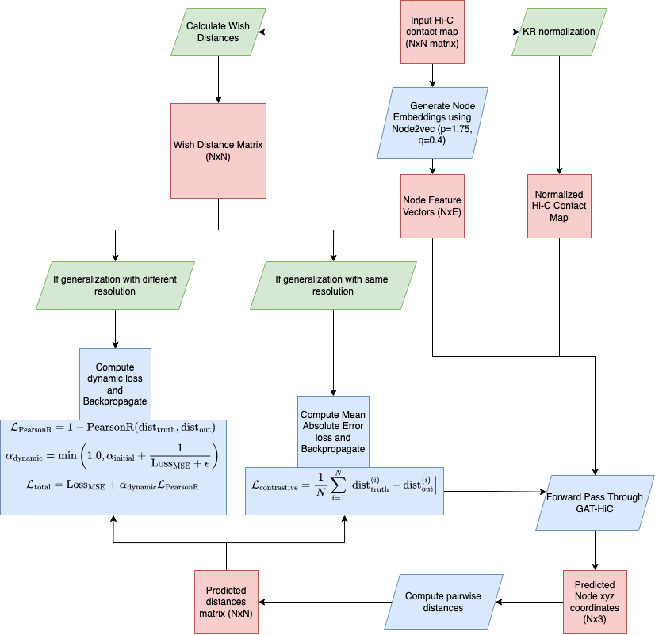

About Me
I’m Beyza Kaya, a Master’s student in the Artificial Intelligence program at Özyeğin University, specializing in bioinformatics and computational biology. My research focuses on applying graph neural networks to biological structures, particularly chromatin architecture and spatio-temporal gene expression patterns.
I work under the supervision of Dr. Emre Sefer and have completed projects exploring computational models of genome dynamics and temporal gene regulation.
Location: Istanbul, Türkiye
Email: beyza.kaya@ozu.edu.tr
Education
- MSc Artificial Intelligence (Bioinformatics) — Özyeğin University
- BSc Computer Science & Industrial Engineering (Double Major) — Özyeğin University
Technical Skills
- Graph Neural Networks & AI for Bioinformatics
- Computational Biology & Chromatin Modeling
- Hi-C Data Analysis & Spatio-Temporal Genomics
- Python, PyTorch, pandas, NumPy
Featured Research
GAT-HiC: Graph Attention Networks predicting unseen chromatin structures
(TCBB 2025)
STEP: Spatio-Temporal Expression Prediction using graph-based modeling
(bioRxiv 2025)
Projects
1. GAT-HiC — Graph Attention Model for Chromatin Structure Prediction
GAT-HiC is a graph-attention–based model that predicts unseen chromatin structures from Hi-C contact maps. Developed in collaboration with my advisor Dr. Emre Sefer.
Figure: GAT-HiC graph attention model architecture for chromatin structure prediction.
- Leverages graph attention networks (GATs) to model 3D chromatin organization
- Generalizes across different resolutions, enzymes, and species
- Encodes biologically informed graph features derived from genomic regions
- Designed to enable cross-setting and cross-species structural predictions
2. STEP — Spatio-Temporal Expression Prediction
STEP (Spatio-Temporal Expression Prediction) consists of two models: STEPmr and STEPmi, designed for mRNA-specific and miRNA-specific gene sets.

Figure: STEP architecture overview showing integration of mRNA and miRNA time-series with Hi-C features.
- Predicts gene expression levels across multiple time points
- Incorporates Hi-C–derived features and graph representations of interacting genes
- Models dynamic mRNA/miRNA regulatory interactions over time
- Integrates chromatin structure with temporal expression data
Publications
- Kaya B., Sefer E., GAT-HiC: Graph Attention Networks for Chromatin Structure Prediction, TCBB 2025
- Kaya B., Sefer E., Spatio-Temporal Expression Prediction (STEP), bioRxiv 2025
Contact & Academic Links
For collaboration or academic inquiries, feel free to reach out: beyza.kaya@ozu.edu.tr
Academic & professional profiles: LinkedIn | GitHub | Google Scholar